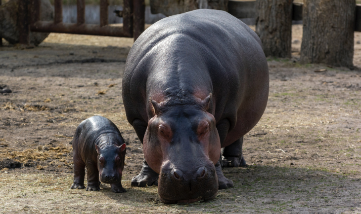

カバ
カバ（Hippopotamus amphibius）は、哺乳綱偶蹄目（鯨偶蹄目とする説もあり）カバ科カバ属に分類される偶蹄類。体長3.5-4メートル。体重はオス平均1,500kg、メス平均1,300kg 。非常に大型のオスだと2,000kgを超えることもある。陸上動物としてはゾウ、サイに次ぐ3番目の重さとされる。分厚い脂肪と真皮・上皮で覆われるが、表皮は非常に薄い。このため毛細管現象により水分は外側へ放出してしまう。
一覧へ戻る
カバ（Hippopotamus amphibius）は、哺乳綱偶蹄目（鯨偶蹄目とする説もあり）カバ科カバ属に分類される偶蹄類。体長3.5-4メートル。体重はオス平均1,500kg、メス平均1,300kg 。非常に大型のオスだと2,000kgを超えることもある。陸上動物としてはゾウ、サイに次ぐ3番目の重さとされる。分厚い脂肪と真皮・上皮で覆われるが、表皮は非常に薄い。このため毛細管現象により水分は外側へ放出してしまう。